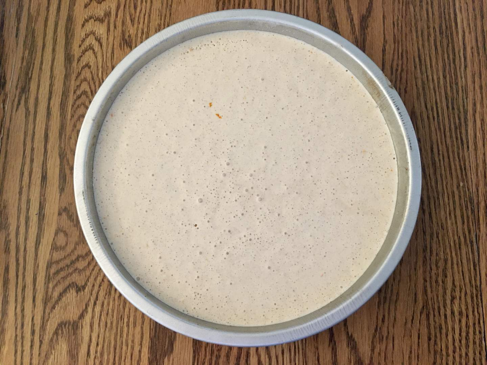
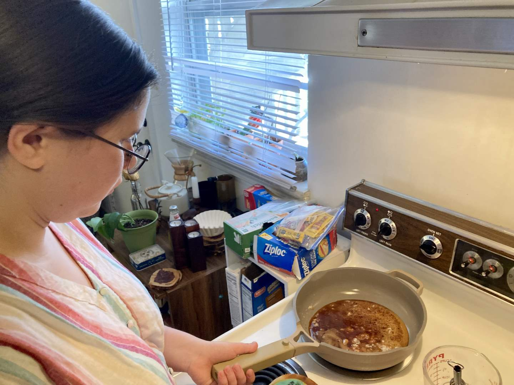
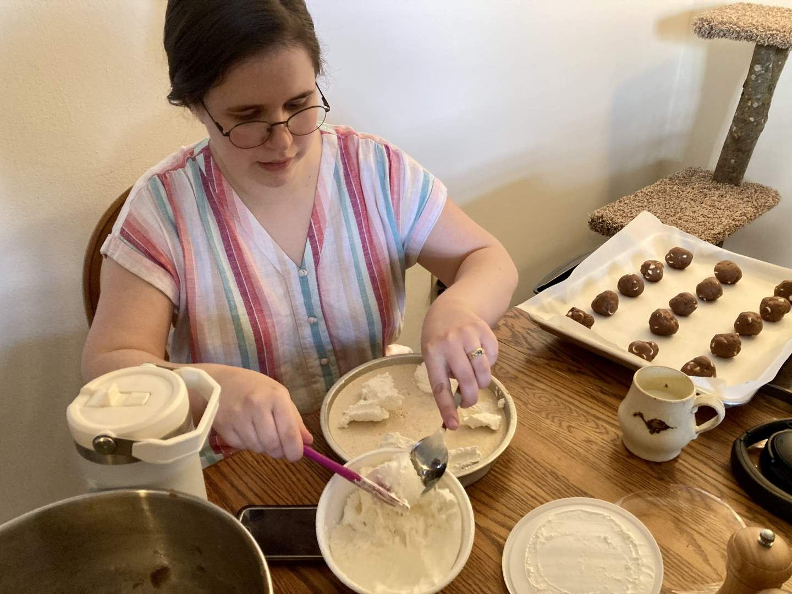
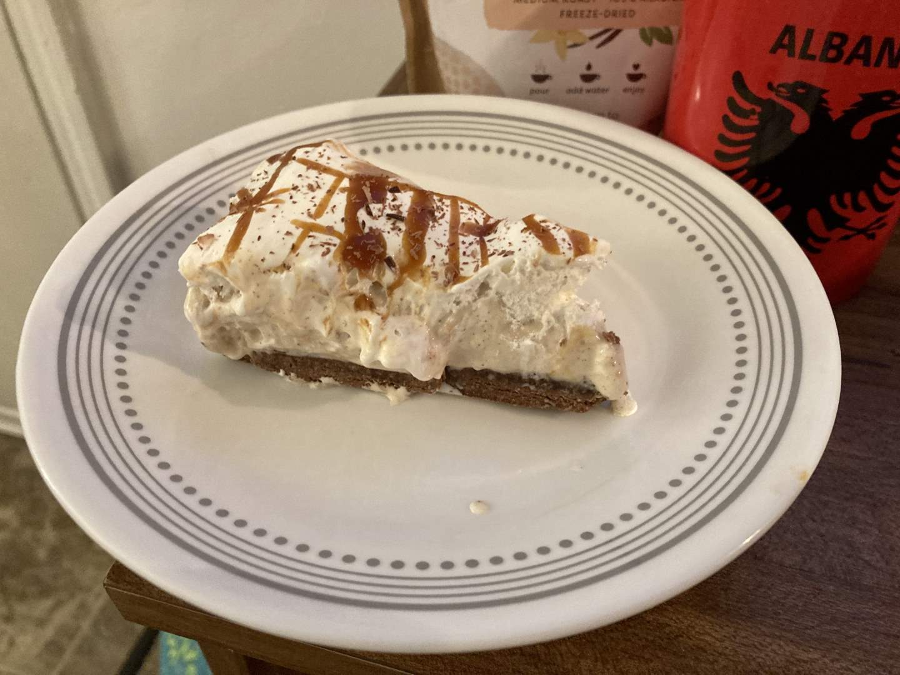

Pie 42: Coffee
2024-04-08Recipe from Home Sick Texan.
Taste:
Difficulty:
Vibes:
Suggested pairing: a fun board game and red velvet cookies
In my excitement to make this pie, I took only one picture before Ben got home in the afternoon. Upon seeing him, I remembered the whole purpose of my venture and exclaimed “oh no, I haven’t taken any pictures!” Thankfully, pies don’t taste any worse if you do not photograph all the key production steps.
We made this pie for a game night with our church small group. I knew there would be at least one gluten-free person, so I bought gluten-free graham crackers, dark chocolate, and sweetened condensed milk. (We have had more success making gluten-free pies out of gluten-free crackers than completely from scratch with gluten-free flour. I would recommend crusts of gluten-free Oreos or graham crackers for those wanting to make a gluten-free pie without buying special flour.)
The recipe calls for a quarter cup of brewed coffee. I rarely make coffee at home (perks of working a coffee job) and to make coffee just to use a quarter cup for a pie seemed excessive. Thankfully, I had some freeze-dried instant coffee left over from my college days. It was mocha-flavored, which I thought would improve the pie, so I thoroughly mixed a few teaspoons of coffee with cold water and refrigerated it until I was ready. If I had been making a pie for true coffee connoisseurs, I would have invested more effort into the coffee element of the pie and made it stronger.
After mixing up the filling in a stand mixer, I placed it in the fridge to chill while I made the crust. The dash of cinnamon in this chocolate cracker crust was a great twist, I will definitely be repeating that in future pies! Once the crust had baked and cooled, I poured the creamy coffee mixture on top of it, covered it with foil, and set it in the freezer to chill. During the chilling, I made a caramel sauce on the stovetop and let it cool a bit.
Shortly before our guests arrived, I removed the pie to adorn it with whipped cream. I had been craving Cool Whip, and since I did not necessarily want to make homemade whipped cream (that’s much more Ben’s practice), I happily plopped a whole container of Cool Whip atop the chocolate coffee pie. Then I drizzled the caramel sauce in a criss-cross pattern all over the whipped topping. Finally, I garnished the pie with dark chocolate shavings, 20% of which missed the pie and landed on the table.
This pie is a fantastic dessert to serve to coffee lovers and is not so offensive to the uninitiated that it cannot be tolerated and even enjoyed (translation: Ben liked it even though he dislikes most coffee-flavored items). The bite of orange zest is refreshing and complements the acidic notes of the coffee. In the future, I might make the filling and freeze it to see how it holds up by itself, as it would probably be a very tasty treat if just scooped like ice cream.
